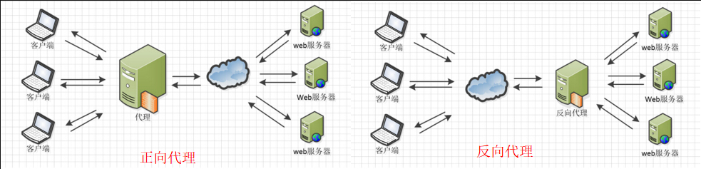
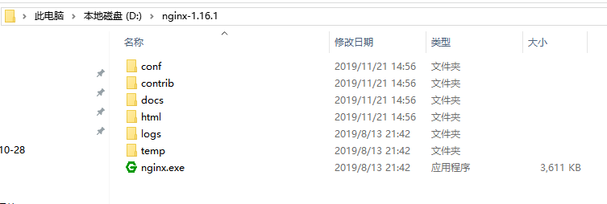
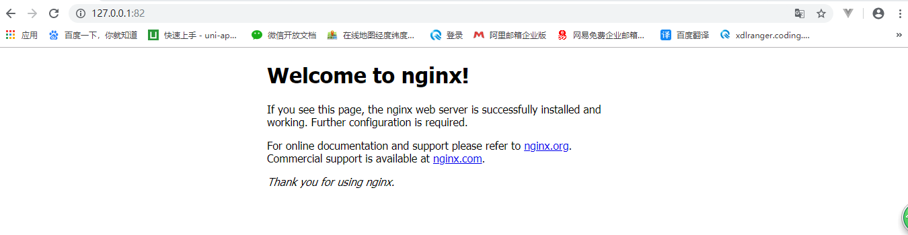
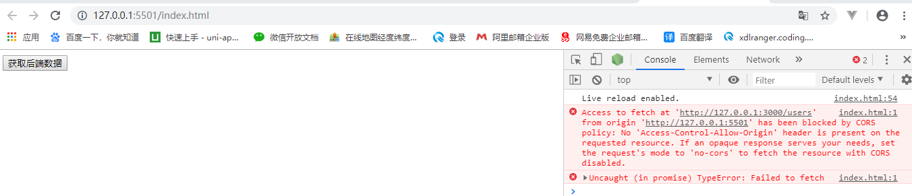
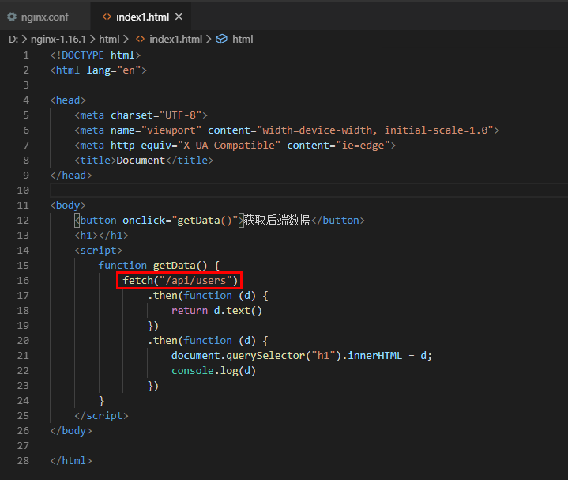
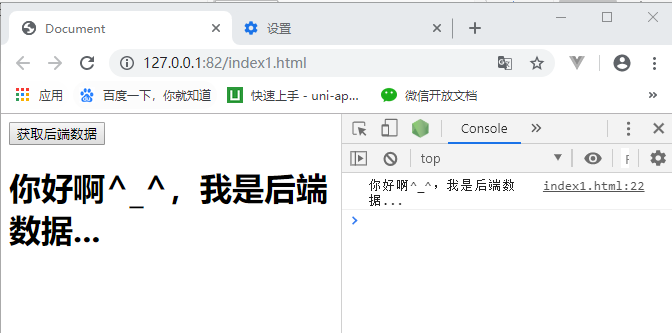
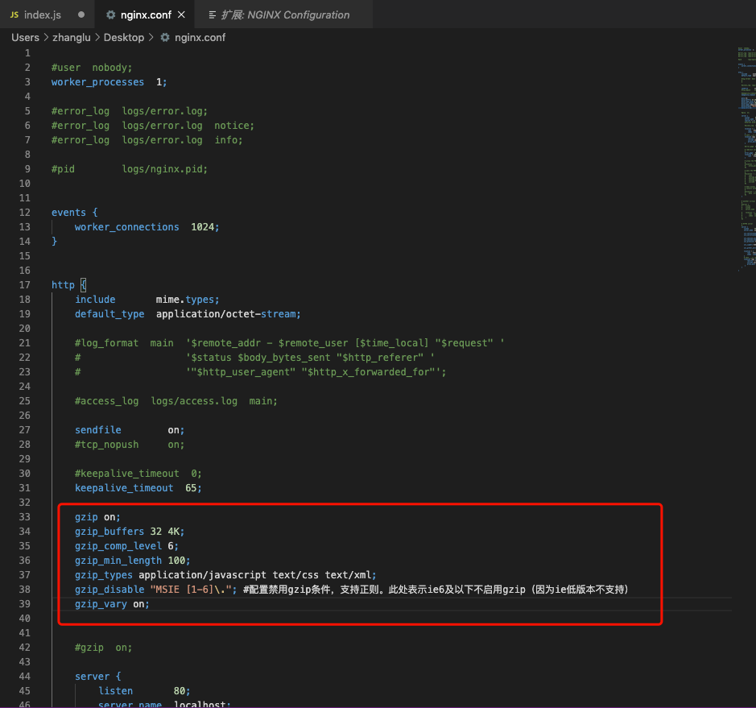

1. 什么是nginx?
常见的服务器： iis, apach，nginx , node
Nginx是一款轻量级的Web 服务器/反向代理服务器及电子邮件（IMAP/POP3）代理服务器，在BSD-like 协议下发行。
其特点是占有内存少，并发能力强，事实上nginx的并发能力在同类型的网页服务器中表现较好，中国大陆使用nginx网站用户有：百度、京东、新浪、网易、腾讯、淘宝等。
2. nginx常见作用？
2.1. 反向代理
正向代理：代理的是客户端，访问者可以由此隐藏自己的身份。
反向代理：代理的是服务器，服务提供者可以隐藏真正的服务器。

2.2. 负载均衡
负载均衡多在高并发情况下需要使用。
其原理就是将数据流量分摊到多个服务器执行，减轻每台服务器的压力，多台服务器(集群)共同完成工作任务，从而提高了数据的吞吐量。
2.3. 动静分离
Nginx提供的动静分离是指把动态请求和静态请求分离开，合适的服务器处理相应的请求，使整个服务器系统的性能、效率更高。
Nginx可以根据配置对不同的请求做不同转发，这是动态分离的基础。静态请求对应的静态资源可以直接放在Nginx上做缓冲，更好的做法是放在相应的缓冲服务器上。动态请求由相应的后端服务器处理。
3. nginx的安装
3.1. 下载
下载稳定版：http://nginx.org/en/download.html

3.2. 解压
下载进行解压，将解压后的文件放到自己心仪的目录下，我的解压文件放在了d盘根目录下，如下图所示：

3.3. 启动
直接双击上图中的蓝色图标【nginx.exe】文件即可，双击后，cmd窗口会闪一下就消失，
这时你可以查看下任务管理器里面是否有相关进程，如果有，那就说明启动成功了

3.4. 启动失败
如果你双击后在任务管理器没有发现这两个进程，那么就说明启动失败，这时估计很有可能是端口被占用了（因为nginx的默认端口是80，然后iis等服务器的默认端口也是80），
这时，修改端口即可，打开nginx的配置文件：
D:\nginx-1.16.1\conf\nginx.conf
将端口80修改下，比如改成82

3.5. 访问
这时你直接访问： 127.0.0.1 即可（默认端口80，如果修改了就加上修改后的端口）

4. 一些在nginx命令
nginx.exe -s stop //停止nginx
nginx.exe -s reload //重新加载nginx
nginx.exe -s quit //退出nginx
注意：如果想要这些命令生效，需要在nginx.exe所在目录下打开cmd进行执行，或者把此路径配置进入环境变量。
5. nginx使用之--部署生产代码
查看解压后的nginx目录，发现有一个html目录，这个目录就是我们项目的网页代码所在的目录，我们的生产代码就应该放入到这里面来。

比如我把我们课件中的一个网站代码放进去，效果如下，表示使用nginx成功的部署了我们项目代码

你也可以把你的打包出来的dist代码放进去，进行部署
6. nginx使用之--自定义根目录
修改配置文件内容
如果你不想每次访问时都要加上一个dist或者webtest1等名字，那么你可以把D:\nginx-1.16.1\conf\nginx.conf文件中的下图的location选项的root值改掉即可
（默认根路径是html,把html改为html/webtest1就能直接访问webtest1了）

修改完后记得重启下nginx服务器
命令如下： nginx.exe -s reload
再次访问你的网站
7. nginx使用之--使用反向代理解决跨域
7.1. 后端使用cors跨域时
后端，先使用nginx创建一个项目

7.1.1. 后端：实现cors跨域并写一个简单的接口

//使用中间件形式实现跨域访问
app.use("*", function (req, res, next) {
//设置允许跨域的域名，*代表允许任意域名跨域
res.header("Access-Control-Allow-Origin", "*");
//允许的header类型
res.header("Access-Control-Allow-Headers", "content-type");
//接收ajax请求手动提交的cookie信息
res.header("Access-Control-Allow-Credentials", true);
//跨域允许的请求方式
res.header("Access-Control-Allow-Methods", "DELETE,PUT,POST,GET,OPTIONS");
if (req.method == 'OPTIONS')
res.sendStatus(200); //让options尝试请求快速结束
else
next();
});
router.get('/', function(req, res, next) {
res.send('你好啊^_^，我是后端数据...');
});
7.1.2. 前端写一个页面发起fetch请求
<!DOCTYPE html>
<html lang="en">
<head>
<meta charset="UTF-8">
<meta name="viewport" content="width=device-width, initial-scale=1.0">
<meta http-equiv="X-UA-Compatible" content="ie=edge">
<title>Document</title>
</head>
<body>
<button onclick="getData()">获取后端数据</button>
<h1></h1>
<script>
function getData() {
fetch("http://127.0.0.1:3000/users")
.then(function (d) {
return d.text()
})
.then(function (d) {
document.querySelector("h1").innerHTML = d
console.log(d)
})
}
</script>
</body>
</html>
此时由于后端跨域了，所以能正常的获取数据

7.2. 后端屏蔽掉cors跨域时
前端先清除下缓存，然后在进行访问，此时就要报错了

7.3. 开始使用nginx做反向代理跨域
7.3.1. 修改nginx的配置文件
配置文件路径： D:\nginx-1.16.1\conf\nginx.conf
根据下图添加指定代码到相应位置去

# 等价于使用 /api 代替真实地址 http://127.0.0.1:3000
location /api {
rewrite ^.+api/?(.*)$ /$1 break;
include uwsgi_params;
proxy_pass http://127.0.0.1:3000;
}
7.3.2. 修改网页访问的接口地址

7.3.3. 将网页移入到nginx中的html目录下
7.3.4. 重新加载nginx
在nginx.exe目录下执行如下命令重启nginx
nginx.exe -s reload //重新加载nginx
7.3.5. 开始访问页面，获取数据

8. nginx开启gzip压缩
只需要在http选项中添加如下代码即可
gzip on;
gzip_buffers 32 4K;
gzip_comp_level 6;
gzip_min_length 100;
gzip_types application/javascript text/css text/xml;
gzip_disable "MSIE [1-6]\."; #配置禁用gzip条件，支持正则。此处表示ie6及以下不启用gzip（因为ie低版本不支持）
gzip_vary on;

gzip配置说明
1) gzip on; 开启gzip压缩
2) gzip_min_length 1k; 设置允许压缩的页面最小字节数，1k以下可能会存在越压越大的情况
3) gzip_buffers 4 16k; 设置系统获取几个单位的缓存用于存储gzip的压缩结果数据流
4) gzip_http_version 1.1 ; 默认值: gzip_http_version 1.1，标识只有http协议是1.1版本的才会开启压缩，因为早期浏览器可能存在不支持自解压功能，会存在用户看到乱码的风险
5) gzip_comp_level 3; 默认1，gzip压缩比/压缩级别，压缩级别 1-9，级别越高压缩率越大，越耗CPU，压缩时间越长
6) gzip_types text/plain text/html application/x-javascript text/css application/xml text/javascript image/jpeg image/gif image/png image/x-icon ; 默认 text/html，可压缩文件的格式，只有指定格式的文件才会进行压缩，具体格式如下所示：
types {
text/html html htm shtml;
text/css css;
text/xml xml;
image/gif gif;
image/jpeg jpeg jpg;
application/javascript js;
application/atom+xml atom;
application/rss+xml rss;
text/mathml mml;
text/plain txt;
text/vnd.sun.j2me.app-descriptor jad;
text/vnd.wap.wml wml;
text/x-component htc;
image/png png;
image/tiff tif tiff;
image/vnd.wap.wbmp wbmp;
image/x-icon ico;
image/x-jng jng;
image/x-ms-bmp bmp;
image/svg+xml svg svgz;
image/webp webp;
application/font-woff woff;
application/java-archive jar war ear;
application/json json;
application/mac-binhex40 hqx;
application/msword doc;
application/pdf pdf;
application/postscript ps eps ai;
application/rtf rtf;
application/vnd.apple.mpegurl m3u8;
application/vnd.ms-excel xls;
application/vnd.ms-fontobject eot;
application/vnd.ms-powerpoint ppt;
application/vnd.wap.wmlc wmlc;
application/vnd.google-earth.kml+xml kml;
application/vnd.google-earth.kmz kmz;
application/x-7z-compressed 7z;
application/x-cocoa cco;
application/x-java-archive-diff jardiff;
application/x-java-jnlp-file jnlp;
application/x-makeself run;
application/x-perl pl pm;
application/x-pilot prc pdb;
application/x-rar-compressed rar;
application/x-redhat-package-manager rpm;
application/x-sea sea;
application/x-shockwave-flash swf;
application/x-stuffit sit;
application/x-tcl tcl tk;
application/x-x509-ca-cert der pem crt;
application/x-xpinstall xpi;
application/xhtml+xml xhtml;
application/xspf+xml xspf;
application/zip zip;
application/octet-stream bin exe dll;
application/octet-stream deb;
application/octet-stream dmg;
application/octet-stream iso img;
application/octet-stream msi msp msm;
application/vnd.openxmlformats-officedocument.wordprocessingml.document docx;
application/vnd.openxmlformats-officedocument.spreadsheetml.sheet xlsx;
application/vnd.openxmlformats-officedocument.presentationml.presentation pptx;
audio/midi mid midi kar;
audio/mpeg mp3;
audio/ogg ogg;
audio/x-m4a m4a;
audio/x-realaudio ra;
video/3gpp 3gpp 3gp;
video/mp2t ts;
video/mp4 mp4;
video/mpeg mpeg mpg;
video/quicktime mov;
video/webm webm;
video/x-flv flv;
video/x-m4v m4v;
video/x-mng mng;
video/x-ms-asf asx asf;
video/x-ms-wmv wmv;
video/x-msvideo avi;
}
来源于nginx/conf/mime.types 文件
7) gzip_vary on; http头联合使用，加个vary头，给代理服务器用的，有的浏览器支持压缩，有的不支持，所以避免浪费不支持的也压缩，所以根据客户端的HTTP头来判断，是否需要压缩
8) gzip_disable "MSIE [1-6]\."; 禁用IE1-6版本使用gzip压缩
9. nginx处理404,路由，解决react/vue的history模式问题

error_page 404 /index.html;
10. nginx代理返回406（upgrade required）解决方法
请求返回 426
nginx 反向代理默认走的http 1.0版本
但是 被反向代理的服务器是1.1版本的!
so 在反向代理的时候加上一句
proxy_http_version 1.1;
10.1. DEMO
location /recharge {
proxy_http_version 1.1;
proxy_pass http://10.100.100.100:360/;
}